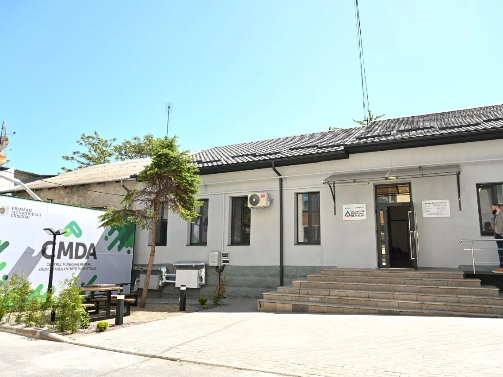

Incubatorul Municipal de Afaceri (IMA)
Incubator

Incubatorul Municipal de Afaceri oferă infrastructura necesară pentru întreprinderile nou-înființate din industrii culturale, creative și sectorul IT, inclusiv spații de lucru, servicii de consultanță, mentorat și oportunități de networking, pentru o perioadă de până la 24 de luni.
+600%
Creșterea cifrei de afaceri a rezidenților
de la 247 896 la 1 863 878 lei11
Rezidenți activi
20
Aplicații primite
Ce oferim:
- Suport intensiv pentru întreprinderi micro, mici și mijlocii
- Acces la spații modulare de lucru și utilități
- Consultanță de inovare, consultanță tehnologică și sprijin managerial
- Perioadă de incubare de până la 24 de luni
- Evenimente de networking și dezvoltare profesională